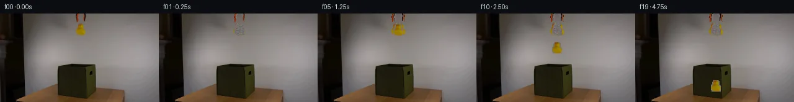

![首帧]()

Round 00
2026-11-05T15:45:07.409082+00:00像素候选变化代码 +318/−0inspection 更新
pixels 02e12cbac17422a3 · code 8df0691776d40921
查看本轮 generate.py 真实 diff
--- previous/generate.py +++ current/generate.py @@ -0,0 +1,318 @@ +#!/usr/bin/env python3 +"""generate.py - Generate 20 RGB frames animating grabber releasing duck into box. + +Method: Pure numpy/PIL pixel operations. +- Frame 00 = exact copy of first_frame.png +- Duck sprite extracted via color-threshold mask from frame 0 +- Grabber jaws (orange prongs) animated opening outward +- Duck falls under gravity, bounces, settles in dark green fabric box +- Background inpainting uses wall color with statistical noise matching +""" + +import numpy as np +from PIL import Image +from pathlib import Path +import sys + +# Add artifact_io for output +sys.path.insert(0, str(Path(__file__).parent)) +from artifact_io import save + +CASE_DIR = Path(__file__).parent +H, W = 144, 256 +FPS = 4 +N_FRAMES = 20 +DT = 1.0 / FPS # 0.25 s per frame + +# --------------------------------------------------------------------------- +# 1. Load frame 0 +# --------------------------------------------------------------------------- +img = Image.open(CASE_DIR / 'first_frame.png') +frame0 = np.array(img, dtype=np.uint8) # (144, 256, 3) +assert frame0.shape == (H, W, 3) and frame0.dtype == np.uint8 + +# --------------------------------------------------------------------------- +# 2. Scene measurements (from OBSERVATION.md analysis) +# --------------------------------------------------------------------------- + +# Wall background statistics (sampled from x=100-120, y=10-40) +WALL_R, WALL_G, WALL_B = 117.0, 111.0, 108.0 +WALL_NOISE_R, WALL_NOISE_G, WALL_NOISE_B = 10.6, 10.7, 11.1 + +# Duck region in frame 0: x=122..138, y=16..35 +DUCK_X0, DUCK_X1 = 122, 138 # exclusive upper bound +DUCK_Y0, DUCK_Y1 = 16, 35 +DUCK_CX = (DUCK_X0 + DUCK_X1) / 2.0 # center x ~ 130 +DUCK_CY = (DUCK_Y0 + DUCK_Y1) / 2.0 # center y ~ 25.5 + +# Box interior: the dark opening +BOX_X0, BOX_X1 = 82, 112 +BOX_Y0 = 83 # top of box opening +BOX_Y_BOTTOM = 108 # approximate bottom of box interior + +# Grabber shaft center, and orange prong positions in frame 0 +GRABBER_CX = 130 # center of grabber shaft +LEFT_PRONG_X0, LEFT_PRONG_X1 = 123, 128 # left orange prong x-range +RIGHT_PRONG_X0, RIGHT_PRONG_X1 = 132, 137 # right orange prong x-range + +# Gravitational acceleration (px/s²) — scaled so duck falls ~83 px in ~2.5 s +# y(t) = y0 + 0.5 * g * t^2 +# 83 = 0.5 * g * (2.5)^2 => g = 83*2/6.25 = 26.56 +GRAVITY = 26.56 # px/s² + +def wall_color(rng=None): + """Generate a wall-like color with noise matching scene statistics.""" + if rng is None: + rng = np.random + r = np.clip(WALL_R + rng.normal(0, WALL_NOISE_R), 80, 150) + g = np.clip(WALL_G + rng.normal(0, WALL_NOISE_G), 75, 145) + b = np.clip(WALL_B + rng.normal(0, WALL_NOISE_B), 70, 140) + return np.array([r, g, b], dtype=np.uint8) + +# --------------------------------------------------------------------------- +# 3. Extract duck sprite +# --------------------------------------------------------------------------- +# Duck: bright yellow-orange pixels with very low blue +# More precise: R>100, G>40, R>B+50, G>B+10, in the duck region +duck_region = frame0[DUCK_Y0:DUCK_Y1, DUCK_X0:DUCK_X1].astype(np.int32) +duck_mask = ( + (duck_region[:, :, 0] > 100) & + (duck_region[:, :, 1] > 40) & + (duck_region[:, :, 0] > duck_region[:, :, 2] + 50) & + (duck_region[:, :, 1] > duck_region[:, :, 2] + 10) +) + +# Also include darker edge pixels that are part of the duck (R>80, low B) +duck_mask2 = ( + (duck_region[:, :, 0] > 70) & … diff truncated; 231 more lines …